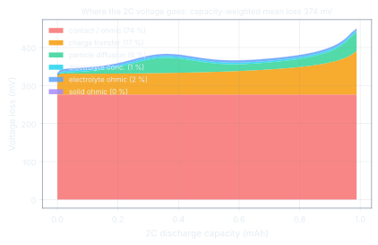

01 · The measurement
One coin cell, seven tests, four C-rates, three scan rates.
Commercial LiMn₂O₄ sheet against lithium metal on a Bio-Logic VMP-300. Galvanostatic cycling at C/10, C/5, C/2 and 2C between 3.5 and 4.5 V with a 30 s rest after every step, and cyclic voltammetry at 0.1, 0.2 and 0.3 mV/s. At 2C the cell keeps 58 % of its C/10 capacity and 53 % of its energy; round-trip energy efficiency falls from 95 % at C/5 to 82 % at 2C.
| Rate | I (mA) | Q (mAh) | V̄ (V) | E (mWh) | RTE (%) |
|---|
Representative cycle per rate (cycle 1; cycle 2 at 2C because cycle 1 followed a CV that ended at 3.0 V). RTE is discharge energy over charge energy of the same cycle; C/10 is lowered by first-cycle parasitic oxidation near 4.5 V (coulombic efficiency 91 %).
Measurement artefacts, flagged and handled, not hidden
- C/10 current range: run on the 10 mA range, so the current reads 0.147 / 0.140 mA against 0.143 set. The measured current is integrated, not the set point.
- C/5 contact disturbance: a 22 mV step on the second discharge, current unchanged. Cycle 1 is used for fitting; the step returns at the switch-off, which confirms it as a contact resistance.
- 2C history: the first 2C charge removed extra lithium after a CV ending at 3.0 V. Cycle 2 is the representative 2C cycle and the model is run through cycle 1 to carry the right history.
- CV auto-ranging: current-range switches near ±1 mA and a -8.8 mA inrush at the start of the 0.2 mV/s file are excluded from the peak search.
02 · Validation on data the fit never saw
Three parameters, fitted on two rates, reproduce the other two and a different technique.
Solid-diffusion time constant, reaction rate constant and contact resistance were fitted by nonlinear least squares on the C/5 and C/2 curves only (26 mV RMSE). C/10 is a low-rate check, 2C is a blind prediction, and the CVs are simulated by feeding the model the measured voltage programme.
| Rate | Role | Q meas / model (mAh) | ΔV̄ (mV) | V-Q RMSE (mV) |
|---|
The 2C capacity is over-predicted by 20 %: the fit on C/5 and C/2 cannot separate an instantaneous ohmic drop from a transport loss that grows with time, and it picked the ohmic explanation. That limitation is stated, measured and chased through three further model versions in the repository.
| Scan rate | Ox. peak meas / DFN (V) | Red. peak meas / DFN (V) | Largest shift (mV) |
|---|
b-values (slope of log peak current against log scan rate): measured , model . Both sit between the diffusion (0.5) and surface (1.0) limits, as expected for a porous electrode.
03 · Where the 2C voltage goes
The model names the loss. The rests say part of the name is wrong.
PyBaMM's voltage-component variables close to the terminal voltage to better than a microvolt, so the 374 mV capacity-weighted mean loss on the 2C discharge can be split by mechanism. Then the 30 s rests after every step, read straight from the raw files, give a model-free check on the ohmic part.
Capacity-weighted mean voltage loss at 2C: 374 mV
DFN v1, 10 mm disc
contact / ohmic 0 %
charge transfer 0 %
particle diffusion 0 %
electrolyte 0 %
72 Ωinstantaneous resistance from the post-charge rests, C/10 to C/2 (2C post-hoc: 74 Ω)
97 Ωcontact resistance the curve-only fit needed (leave-one-out 81 to 122 Ω)

74 % ohmic and contact resistance
A lumped resistance of 97 Ω carries most of the loss: current-collector contact, separator and the lithium-metal interphase, all in one number.
17 % charge transfer
Butler-Volmer kinetics with the fitted rate constant. The log-parameters k and R_contact are correlated at 0.94, so the data split these two losses only weakly.
6 % solid-state diffusion, 3 % electrolyte
Diffusion in 5 µm particles with the fitted time constant R²/D of about 2,200 s. At the 3.5 V cut-off the particles' bulk open-circuit voltage is still 3.95 V: 0.15 mAh of lithium the model could not deliver at that rate.
The rests disagree: 72 Ω, not 97 Ω
The voltage jump 48 ms after every current interruption gives the instantaneous resistance model-free. After charge it is 72 Ω at every rate from C/10 to 2C. The curve-only fit assigned too much loss to resistance, and the relaxation that follows is linear in log(time), which a model with one particle size and no double layer cannot produce.
Give the model a double layer: rest misfit 40 → 15 mV
Adding double-layer capacitance (one PyBaMM option, one extra parameter) lets the same training data fit the rests to 15 mV instead of 40 mV, with the contact resistance at 89 Ω. It does not improve the blind 2C capacity, and the repository says so, version by version, down to a tested side-reaction submodel.
04 · Reproduce it
From raw cycler files to every figure, table and number.
The raw EC-Lab exports are in the repository and are never modified. One command regenerates the processed data, the fits, the validation, the figures and the README text; no number in the README is typed by hand.
git clone https://github.com/Soham-ChemE/LMO-Cathode-Rate-Model-PyBaMM.git
cd LMO-Cathode-Rate-Model-PyBaMM
python -m venv .venv && source .venv/bin/activate
pip install -r requirements.txt && pip install -e .
make test # 58 tests, under 10 s
python scripts/run_all.py --fast # SPMe only, a few minutes; omit --fast for the DFN headline
python docs/build_assets.py # this page's data and figures
CiteS. Kavathekar, LiMn₂O₄ half cell: a physics-based PyBaMM rate model fitted to measured galvanostatic data, MSE 5550 project, University of Pennsylvania, 2026. github.com/Soham-ChemE/LMO-Cathode-Rate-Model-PyBaMM
ScopeOne cell, one cycle per rate, measured in sequence, so slow drift is folded into the fitted parameters. The electrode area was never entered in EC-Lab; it is derived from capacity and the headline uses the only disc size that gives a physically plausible coating. Nothing was tuned on the 2C or CV data.